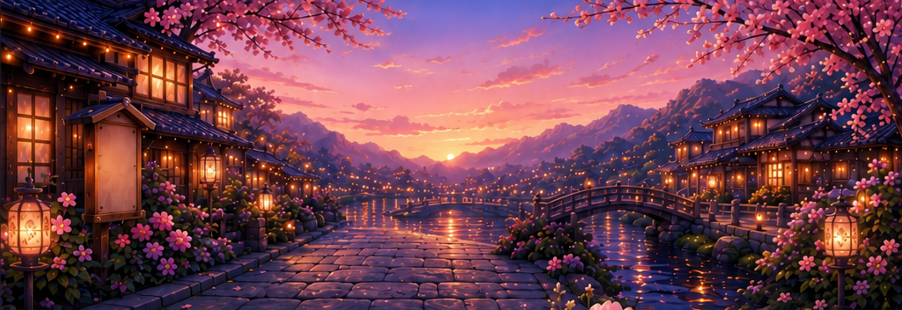
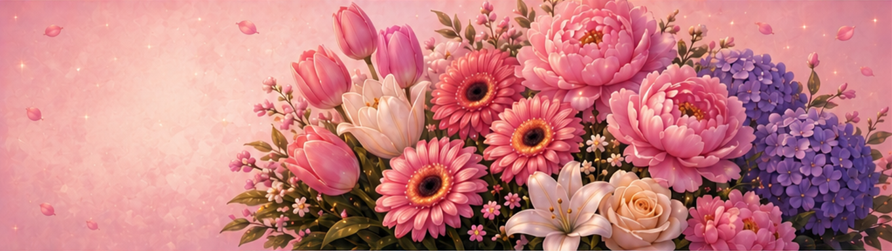
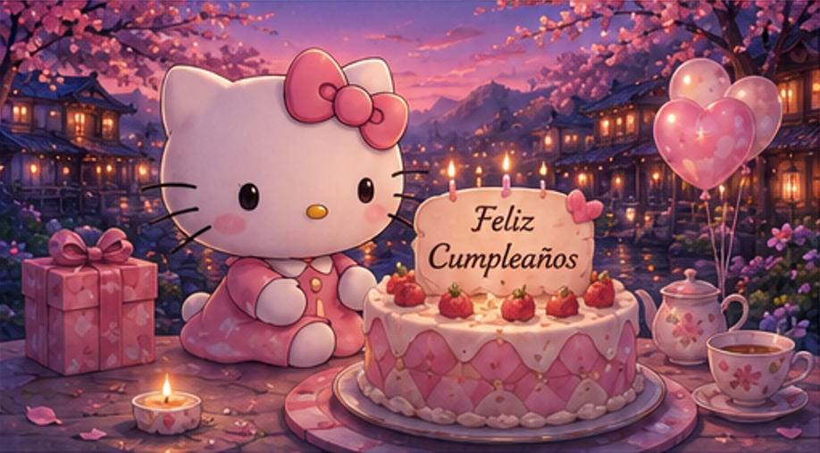
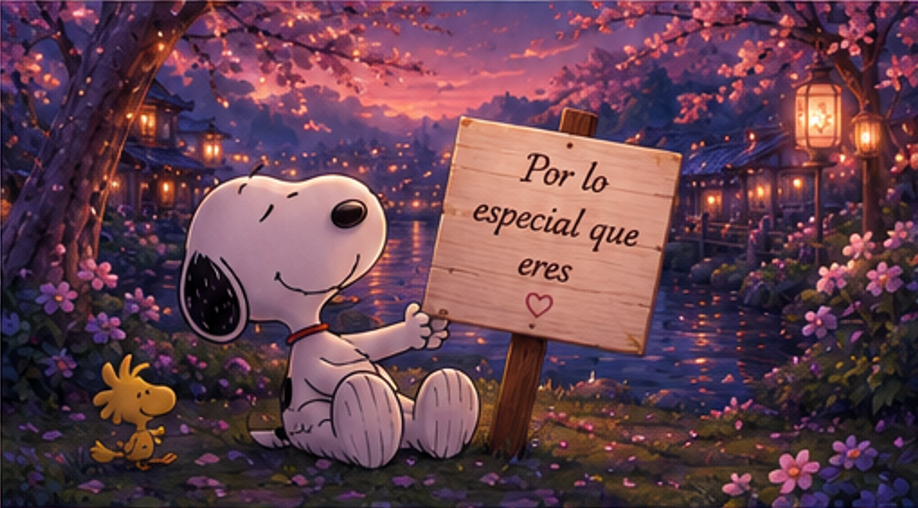
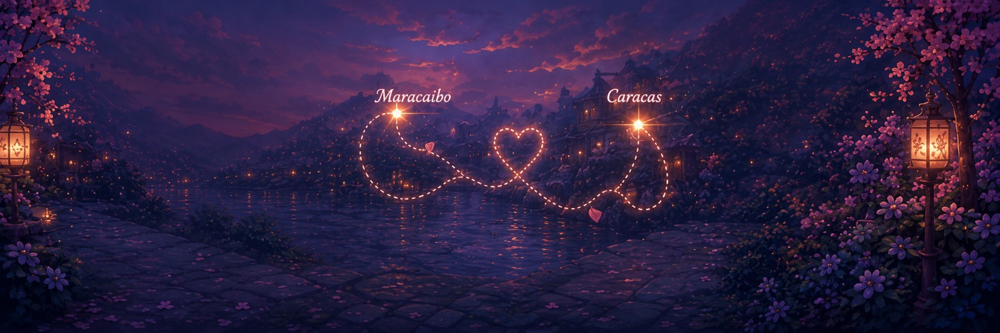
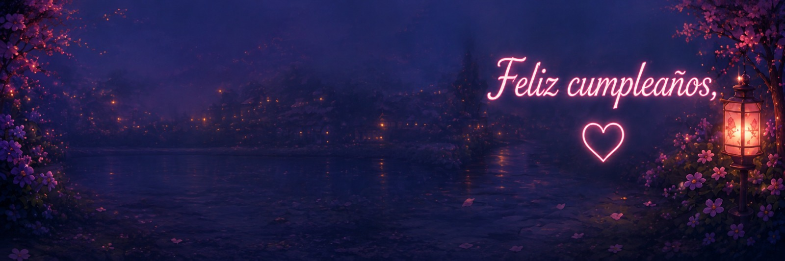

Tengo algo preparado para ti...
Para una persona
muy especial 🤍
Para ti, en tu día especial 🤍
Hoy es un día especial porque cumple años una niña verdaderamente especial.
Una persona maravillosa, de esas que es imposible no querer, no admirar y, con el tiempo, no llegar a amar profundamente.
Adoro tantas cosas de ti que podría pasar horas intentando describirlas.
Adoro tu carácter, tus sentimientos y esa manera tan tuya de entregarte a las cosas que realmente te importan.
Adoro tu pelo, tu cara tan bella y, sobre todo, tus ojos.
Esos ojos que, incluso a través de una pantalla, parecen capaces de ver mucho más allá de lo que uno muestra; como si pudieran mirar el alma y todo lo que uno lleva dentro.
Pero si hay algo que admiro de ti por encima de muchas cosas, es tu fortaleza.
Esa manera que tienes de seguir adelante incluso cuando las circunstancias se ponen difíciles.
Porque los momentos malos han llegado a tu vida, como llegan a la vida de todos, pero tú no te has rendido.
Y eso dice muchísimo de la persona que eres.
Hoy no solamente celebramos que cumples un año más.
Hoy celebramos que un día como hoy llegaste al mundo y que, desde entonces, has dejado un poquito de ti en la vida de las personas que han tenido la suerte de conocerte.
Y yo puedo decir, con toda sinceridad, que dejaste una parte de ti en la mía.
Porque has conseguido iluminar mis días de una manera que quizás nunca llegues a comprender completamente.
Porque también has estado para mí
Siempre has tenido esa manera tan tuya de estar para las personas que quieres, de dar tu tiempo, tu cariño y tu compañía.
Y quizás por eso hoy quería que fuera diferente.
Hoy quiero que seas tú quien reciba un poquito de todo aquello que tanto das.

Quizás no pude darte un ramo de flores en persona, pero quería darte unas flores que pudieran quedarse contigo.
Porque quería que hubiera aquí algo que representara algunas de las cosas bonitas que te gustan.
Y aunque estas no puedan tener el mismo aroma que unas flores reales, espero que puedan recordarte el cariño con el que hice todo esto.
Quiero regalarte un día especial, un día bonito, un día en el que puedas sentir un poquito de todo lo que tú haces sentir a las personas que te rodean.
Quiero darte tranquilidad, paz y un momento en el que simplemente puedas disfrutar.
Y quiero que durante este día recuerdes algo muy sencillo:
eres importante.
No solamente porque hoy sea tu cumpleaños, sino porque lo eres todos los días.
Podría pasar muchísimo tiempo escribiéndote sobre todo lo que hemos vivido y sobre este camino que hemos recorrido.
Un camino que, de una manera u otra, Dios nos ha permitido compartir.

Y aunque la distancia haya estado entre nosotros, incluso así has conseguido hacer que mis días sean un poquito más especiales.
Es curioso pensar que, sin haber tenido todavía la oportunidad de verte frente a frente, hayas conseguido hacerte un espacio tan importante en mi vida.
Quizás no siempre te lo digo.
Quizás tampoco siempre sé cómo demostrarlo.
Pero eso no significa que no lo sienta.
Porque hay personas que simplemente pasan por nuestra vida...
y hay otras que terminan formando parte de ella.
Tú eres de esas personas.
Por lo especial que eres.

Algo que viene del alma
Por eso quería hacer algo diferente para ti.
Los regalos comprados están bien. Son bonitos y, por supuesto, también llevan una intención y un cariño detrás.
Pero yo quería darte algo diferente.
Quería darte algo que no pudiera simplemente comprarse en una tienda.
Quizás todavía no te he llevado a Japón...
pero traje un pedacito de Japón para que lo conozcas.
Porque sé que es un lugar que te gusta y quería que también tuviera un pequeño espacio dentro de este regalo.
Tal vez algún día pueda llevarte de verdad y podamos conocerlo juntos.
Algo que pudiera guardar dentro un poquito de todo lo que siento.
De todo lo que agradezco y de todo lo que quizás muchas veces no sé cómo decirte.
Por eso hice esto.
Porque quería que tu cumpleaños tuviera algo que fuera solamente tuyo.
Algo hecho pensando en ti, en las cosas que te gustan, en tu forma de ser y en todos esos pequeños detalles que hacen que seas tú.
Y, sobre todo, quería que cuando lo vieras pudieras entender una cosa:
esto viene del alma.
No pretende ser el regalo más grande que hayas recibido.
Ni el más caro.
Solamente quiero que sea uno de esos regalos que, cuando lo recuerdes dentro de mucho tiempo, puedas pensar:
“Alguien hizo todo esto pensando en mí.”
Y eso, para mí, es suficiente.
Lo que quiero para ti
Hay algo más que quiero que sepas.
Mientras mi salud y Dios me lo permitan, quiero cuidarte. Quiero estar para ti de la misma manera en que tú has estado para mí.
Y si alguna vez tengo la oportunidad de hacerte sentir querida, tranquila, acompañada o simplemente sacarte una sonrisa, lo voy a hacer.
Si puedo mimarte un poquito más, lo haré.
Porque te has ganado mi cariño de una manera que muy pocas personas han conseguido.
No porque seas perfecta.
Sino porque eres tú.
Y quizás una de las cosas que más valoro de ti es que, incluso sin proponértelo, me has impulsado a querer ser una mejor persona.
A veces no he sabido hacerte sentir bien. A veces me he equivocado.
Y sé que no siempre he sabido demostrarte correctamente todo lo que siento.
Pero incluso con eso, tú has conseguido despertar en mí algo que considero muy importante: las ganas de ser una persona que aporte paz y no alguien que la quite.
Y eso también es parte de lo que te agradezco.
Tú has sido una de esas personas para mí.
Te llevo conmigo todos los días, incluso cuando la distancia hace que solamente pueda tenerte cerca a través de una pantalla.
Y aunque quisiera que todos tus días fueran especiales, felices y perfectos, sé que eso no siempre será posible.
La vida también tendrá días difíciles.
Habrá momentos en los que estarás cansada, triste o simplemente no tendrás ganas de sonreír.
Y está bien.
No tienes que ser fuerte todo el tiempo.
No tienes que tener siempre una respuesta.
No tienes que poder con todo.
Porque incluso en esos días sigues siendo esa persona maravillosa que hoy estamos celebrando.
Hoy quiero pedir algo por ti
Hoy, en tu cumpleaños, quiero pedirle a Dios que te permita seguir caminando hacia todo aquello que deseas.
Que te dé fuerza cuando la necesites, tranquilidad cuando la busques y motivos para sonreír incluso en los días difíciles.
Quiero que este nuevo año de tu vida esté lleno de momentos que algún día puedas recordar con una sonrisa.
Quiero verte cumplir sueños.
Quiero verte crecer.
Quiero verte conseguir todas esas cosas que alguna vez pensaste que quizás no podrías conseguir.
Y, sobre todo, quiero que seas feliz.
Porque creo que mereces recibir también un poquito de todo el amor que das.
Y hoy quiero que recibas una pequeña parte del mío.
Gracias por todo, Chiqui 🤍
Gracias por existir.
Gracias por ser tú.
Gracias por haber llegado a mi vida y por todas esas pequeñas cosas que quizás para ti no significan demasiado, pero que para mí han significado muchísimo.

No sé exactamente qué nos deparará el futuro.
No sé cuántos caminos nos tocará recorrer ni cuántas cosas cambiarán con el paso de los años.
Pero sí sé algo.
Y quiero que nunca lo olvides:

Pase lo que pase, venga lo que venga y cambien las cosas que tengan que cambiar, hay algo que no va a cambiar: siempre te voy a querer y te voy a amar.
Y espero que algún día la distancia deje de ser una pantalla, unos kilómetros o una llamada, y pueda tener la suerte de decirte todo esto estando frente a ti.
Pero mientras ese día llega, quería que al menos hoy pudieras sentir, aunque fuera a través de este pequeño regalo, una parte de todo el cariño que tengo para ti.
Te quiero muchísimo.
Te amo con todo mi corazón.
Y espero que cuando termines de leer esto entiendas que cada palabra, cada detalle y cada parte de este regalo fueron hechos pensando en ti.